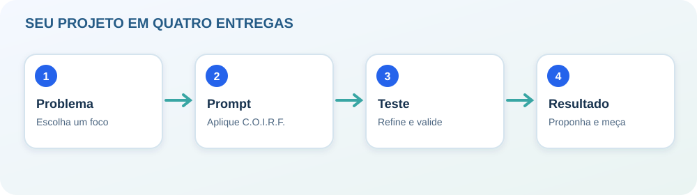

Seu projeto na prática
Resolva um desafio simples da Café Horizonte.
Leia o conceito principal com uma linguagem simples.
Copie o exemplo e experimente no Gemini.
Confira a resposta e tente no seu contexto.
O que você vai aprender
Você vai juntar o que aprendeu e propor uma melhoria simples para a Café Horizonte.
Um pequeno plano para resolver um problema realista com ajuda da IA.
Uma medida simples para saber se houve melhora.
Entenda o exemplo, um passo por vez
Use as setas para avançar. Se estiver em sala, escolha “Apresentar” para exibir apenas a etapa atual.
👁️ Projeto completo em sete movimentos
Seu projeto está completo quando você consegue explicar não apenas o que a IA faz, mas por que usar, como conferir e onde parar.
Cenário
Seu desafio é escolher um problema do negócio, pensar como a IA pode ajudar, testar um pedido no Gemini e explicar como conferir o resultado. Você não precisa construir um sistema: precisa mostrar uma solução útil e segura.
Atendimento
Perguntas repetidas consomem tempo.
Marketing
Falta planejamento e regularidade.
Organização
Informações e tarefas ficam dispersas.
O projeto final é uma pequena melhoria de negócio
O objetivo não é criar um sistema complexo. Você vai demonstrar que sabe identificar uma necessidade, orientar o Gemini, verificar o resultado e propor um processo mais organizado.

- ProblemaEscolha um foco
- PromptAplique C.O.I.R.F.
- TesteRefine e valide
- ResultadoProponha e meça
💡 Analogia — A planta de uma pequena reforma
Antes de reformar uma loja, você observa o problema, desenha uma solução, escolhe materiais e confere se a mudança funcionou. No projeto com IA é parecido: não basta mostrar um prompt; é preciso explicar o problema que ele resolve e como avaliar a solução.
☕ E na Café Horizonte?
Exemplo: demora para responder dúvidas sobre produtos. O aluno cria um prompt para gerar rascunhos com base no FAQ fictício, confere os dados e propõe medir o tempo de preparo das respostas antes e depois da melhoria.
Guarde esta ideia: Entregue uma história coerente: problema realista → prompt adequado → teste e revisão → processo melhorado → critério de sucesso.
🤔 Pare e pense — Um print de uma resposta bonita do Gemini é suficiente como Projeto Integrador?
Não. O trabalho deve evidenciar a necessidade, o comando utilizado, os ajustes, a validação, a proposta de processo e os critérios para avaliar o benefício.
Veja um mini-projeto resolvido antes de criar o seu
O projeto final junta os módulos anteriores. Primeiro observe um exemplo pequeno, com objetivo mensurável e revisão humana; depois preencha seu próprio formulário.
Um projeto pequeno é suficiente para demonstrar aprendizado: um problema bem definido, um teste com dados fictícios e uma forma de conferir o resultado. Você não precisa montar um sistema complexo.
O que observar: Não declare que o projeto economizou tempo ou melhorou vendas antes de medir. Descreva o que espera testar e como pretende comparar os resultados.
- Problema: a equipe repete respostas sobre horário e cardápio.
- IA: prepara rascunhos a partir de informações oficiais fornecidas.
- Pessoa: confere e autoriza o envio.
- Indicador: tempo médio gasto para preparar resposta correta, antes e depois do teste.
Faça junto, passo a passo
- Leia o problema, o uso da IA e o indicador de sucesso do exemplo.
- Teste o prompt no Gemini com dados fictícios da cafeteria.
- Compare o resultado com o modelo e use a estrutura nas etapas do seu Projeto Integrador.
Experimente no Gemini
Copie este comando e teste em gemini.google.com. Os dados são inventados para a atividade.
🔎 Ver um resultado de referência e o que conferir
Solução possível: coletar 5 perguntas simuladas, fornecer o horário/cardápio confirmados, gerar rascunhos, corrigir erros, medir tempo de preparação e taxa de respostas aprovadas. Não há ganho comprovado antes do teste.
Este é um exemplo elaborado para estudo, não uma resposta recebida automaticamente do Gemini. Compare os fatos e a estrutura; a ferramenta pode gerar outra redação.
🧠 Tome uma decisão
Qual evidência demonstra que a proposta teve utilidade?
Selecione uma alternativa para receber a explicação.
✅ Confira seu resultado
0 de 3 critérios conferidos.
Uma oficina responde repetidamente perguntas sobre serviços e horários. Planeje um teste com cinco perguntas simuladas, rascunhos gerados com Gemini, revisão humana e comparação do tempo gasto.
Você pode adaptar a situação ao seu negócio. Use somente informações inventadas ou autorizadas.
Concluiu? Veja como conferir sua resposta
A proposta precisa informar problema, dados confirmados, papel da IA, conferência humana, riscos e indicador. O resultado esperado ainda não é um resultado observado.
Etapa 1 — Defina o problema
Escolha um problema e descreva-o em uma frase concreta. Evite “a empresa precisa usar IA”. Exemplo: “a equipe perde tempo redigindo respostas repetitivas sobre horário e cardápio”.
Etapa 2 — Defina a tarefa da IA
Escolha um papel específico: gerar rascunho, resumir, organizar, classificar, pesquisar ou comparar.
Etapa 3 — Construa o prompt C.O.I.R.F.
Seu prompt deve conter contexto, objetivo, instrução, restrições e formato. Teste no Gemini.
Etapa 4 — Refine duas vezes
Registre duas melhorias realizadas depois de analisar a primeira resposta.
Etapa 5 — Valide
Etapa 6 — Desenhe o processo
Represente pelo menos quatro etapas. Exemplo:
Etapa 7 — Riscos e limites
✅ Como saber se deu certo
Seu projeto está completo quando outra pessoa consegue entender: qual problema existe, o que a IA fará, qual prompt foi usado, como a resposta foi refinada, como foi validada, como o processo funciona e quais cuidados são necessários.
Quadro de resultados do projeto
O projeto fica convincente quando mostra números e não só texto.
Passo a passo
- Estime e registre o antes: tempo para fazer a tarefa sem IA e quantos ajustes costumava precisar.
- Registre o depois: tempo com IA, número de refinamentos e erros encontrados na conferência.
- Prepare uma apresentação de 2 minutos: problema, prompt, resultado, o que conferi e o que faria diferente.
Resultado para mostrar
Um quadro com quatro números (tempo antes, tempo depois, refinamentos, erros achados) e a peça final ao lado.
Use sempre dados fictícios. Recursos e nomes de ferramentas variam conforme conta, país e data; confira o que está disponível para você.
Autoavaliação
🔎 Aprofunde o tema (opcional) · 4 leituras
☕ Exemplo resumido de solução
Problema: a Café Horizonte demora para responder dúvidas repetidas sobre retirada de pedidos.
Uso de IA: gerar um rascunho de resposta a partir de informações oficiais fornecidas pela empresa.
Limite: a IA não pode inventar prazo, preço ou condição comercial.
Processo: mensagem → identificar assunto → consultar informação oficial → gerar rascunho → atendente valida → enviar.
Risco principal: responder com informação inexistente. Controle: fonte oficial + validação humana.
📏 Como avaliar seu próprio projeto
| Critério | Pergunta de verificação |
|---|---|
| Problema | Está específico e ligado a uma necessidade real? |
| Uso da IA | A IA resolve uma tarefa adequada ou foi colocada apenas por novidade? |
| Prompt | Há contexto, objetivo, instrução, limites e formato suficientes? |
| Validação | Está claro quem confere a saída e com base em quê? |
| Processo | O fluxo mostra entrada, ação, decisão e saída? |
| Segurança | Dados e riscos foram considerados? |
⏸️ Revisão antes de finalizar
Minha solução ainda funcionaria se eu retirasse a IA?
Se sim, talvez o problema seja principalmente de organização ou automação simples. Isso não torna a solução ruim; apenas ajuda a escolher a tecnologia adequada.
Consigo explicar em uma frase o benefício esperado?
Exemplo: “reduzir o tempo gasto na preparação de respostas repetitivas, mantendo validação humana”. Benefícios claros ajudam a avaliar se a solução vale a pena.
📝 Meu caderno de aprendizagem
Registre aqui uma ideia, dúvida ou aplicação para o seu negócio.
Terminei esta aula
Fez a leitura e experimentou a atividade? Salve esta aula como concluída.